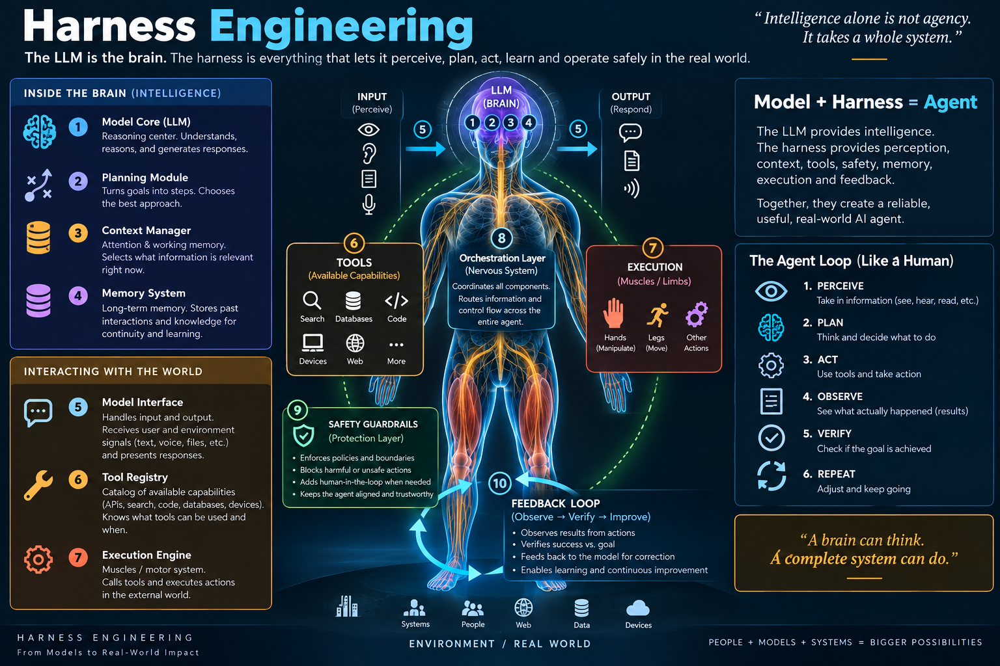

Harness
Engineering
The discipline of building everything around a language model that the model cannot do on its own — so that it becomes a dependable agent, not just an impressive autocomplete.
What is Harness Engineering?
Turning a text predictor into a system that can act, remember, and be trusted.
A raw language model does one thing: it takes in text and returns text. It has no memory between calls, cannot run code, cannot touch a live file system or database, and has no built-in sense of whether its own output actually worked. Everything else an "AI agent" appears to do — editing a codebase, booking a flight, querying a warehouse, waiting for a test suite to pass before continuing — is not the model. It's the harness: the code, configuration, and execution logic wrapped around the model that supplies state, tools, context, and control.
Harness engineering is the deliberate practice of designing that surrounding system, rather than letting it emerge by accident from whatever a framework's defaults happen to provide. It covers the tools an agent can call, how its context window is filled and refreshed, how it remembers things across sessions, how its actions are checked before and after execution, and where the boundaries of its authority are drawn.
The term itself is recent. It was popularized in a widely circulated piece by Mitchell Hashimoto (co-founder of HashiCorp and creator of Terraform) in early 2026, who framed it as the practice of designing the full environment an agent operates within — the rules it follows, the checks it must pass, and the feedback loops that keep it from repeating a mistake. Related terms had already been circulating — context engineering, agent scaffolding, agent-computer interfaces — and harness engineering is best understood as the umbrella term that absorbed them.
Two teams running the identical model can get wildly different results. The gap is almost never the model — it's the harness. Model choice is one lever. Harness design is usually the bigger one.
Why it matters
The scaffolding moves the needle more than the model swap you were about to make.
Researchers at Stanford and Tsinghua University compared identical models running inside differently designed agent wrappers and found performance swings of up to 6× on the same complex, multi-step tasks — from barely usable to near-human — with the model held completely constant. Only the scaffolding around it changed.
This matters practically because it inverts where most teams spend their effort. It's common to see a team benchmark GPT-4 against Claude against Gemini and treat the winner as the whole decision, while the harness around the model is assembled ad hoc: a prompt, a couple of tools wired up, done. Harness engineering treats that scaffolding as a first-class design problem, on the same footing as model selection.
Anatomy of a harness
Nine components show up, in some form, in almost every production agent.

Model interface
The API layer that sends prompts and receives completions — including retries, streaming, and structured-output parsing.
Tool registry
The catalog of actions the agent may call: file edits, shell commands, web search, API requests, database queries.
Context manager
Decides what goes into the limited context window — which files, which history, which summaries — and in what order.
Planning module
Breaks a goal into steps, decides what to do next, and revises the plan as new information arrives.
Execution engine
Actually runs tool calls — often inside a sandbox — and returns real-world results back to the model.
Memory system
Persists facts, decisions, and progress across steps and sessions, beyond what fits in one context window.
Feedback loop
Feeds execution results, test outcomes, and errors back to the model so it can correct course.
Safety guardrails
Permission gates, approval prompts, and hard limits that keep the agent inside its intended authority.
Orchestration layer
The control loop that ties all of the above together across every step of a multi-step task.
In production, the orchestration layer and planning module are rarely hand-rolled as a bare while loop. Teams reach for tooling built specifically for durable, branching agent control flow:
LangGraph / AutoGen
Model the planning module as an explicit directed graph of states and transitions instead of nested if/else logic — makes conditional branching, retries, and multi-agent handoffs inspectable and testable.
Temporal
Runs the orchestration loop as a fault-tolerant workflow that survives process crashes and restarts mid-task — critical once an agent's tasks run for minutes or hours rather than seconds.
Whether to hand-roll the loop or adopt a framework is itself a harness-engineering decision. Hand-rolled loops are transparent and easy to debug at small scale; graph and durable-execution frameworks earn their overhead once you have long-horizon tasks, multiple cooperating agents, or a requirement to survive infrastructure failures mid-run.
The agent loop
A harness turns one model call into a closed loop that runs until the task is verifiably done.
Take a coding agent asked to fix a failing test. Left alone, a model can only describe a plausible fix in prose. Inside a harness, the loop looks like this: it perceives the current file and test output, plans a change, acts by editing the file through a tool call, observes the diff and re-run test output, then verifies against a concrete signal — the test suite passing — rather than the model's own claim that it's done. If verification fails, the loop repeats with the new information folded in. This is the difference between an agent that reports success and one that has actually confirmed it.
Without an explicit verify stage, a harness has no way to distinguish "the model says it's done" from "it's actually done." Binding completion to a deterministic check — a test, a lint pass, a schema validation — is one of the highest-leverage things a harness can add.
Tool harness vs. user harness
Part of the harness ships with the product. Part of it is yours to build.
A more precise version of the shorthand splits the harness in two: Agent = Model + Tool Harness + User Harness. The tool harness is what a product like Claude Code or Cursor already provides — its built-in tool set, sandboxing, and orchestration loop. The user harness is the project-specific layer that a team builds on top: house rules, test requirements, context documents, and conventions that tell a generic coding agent how this codebase specifically wants to be worked on.
Comes with the product
Model interface, sandboxed execution, the built-in tool catalog (read/edit/search/run), and the core orchestration loop that drives multi-step tool use.
Built by the team
Repo-local instructions (e.g. CLAUDE.md), required checks before a change is "done," context documents, custom subagents, and permission policies.
This split matters because it clarifies where your leverage actually is. You usually can't change a product's tool harness, but you have almost complete control over the user harness — and in practice, that's where most of the reliability gains in day-to-day use come from.
Worked example: a coding-agent harness
Mapping the nine components onto a real tool-using coding agent.
Tools like Claude Code, Cursor, and similar coding agents are not "a chat interface bolted onto a model" — they are a model wrapped in a harness purpose-built for software work. Walking the nine components against this concrete case makes the abstraction click:
| Component | What it looks like in a coding agent |
|---|---|
| Model interface | Streams responses from the underlying model, parses tool-call requests out of them. |
| Tool registry | A curated set: read file, edit file, run a shell command, search the repo, fetch a URL. |
| Context manager | Decides which files and how much conversation history fit in the window; compacts or summarizes the rest. |
| Planning module | Breaks "fix the bug" into: reproduce it, locate the cause, change code, re-test. |
| Execution engine | Runs shell commands and file edits, often inside a sandbox with restricted network and disk access. |
| Memory system | A repo-local instructions file plus session logs that can be reloaded in later sessions. |
| Feedback loop | Test output, linter errors, and stack traces are fed back into context after each action. |
| Safety guardrails | Approval prompts before destructive commands; restrictions on which directories can be touched. |
| Orchestration layer | The loop that keeps calling the model with updated context until the task is verified complete. |
Next time you use any AI coding tool, try to name which of the nine components you're interacting with at each moment — a prompt for permission is a guardrail; a summarized chat history is the context manager at work. It's the fastest way to internalize the model.
Comparing harnesses
Different products make different trade-offs on the same nine components.
Coding-agent harnesses increasingly differentiate less on the model they call and more on how they manage memory and autonomy. A useful lens is to look at how each handles three memory layers: immediate context in the active window, session-level state as a task progresses, and durable memory that survives across sessions.
| Layer | Ephemeral (in-window) | Session-level | Durable (cross-session) |
|---|---|---|---|
| What it holds | Recent messages, open file, cursor position, latest tool output | Task plan, edits made so far, files touched this run | Project conventions, past architecture decisions, known gotchas |
| Typical mechanism | The raw context window itself | Working notes, TODO state, in-memory task graph | Repo-local instruction files, external memory stores, session summaries reloaded at startup |
| Risk if under-designed | Losing track of what was just tried | Re-doing work already completed this run | Repeating the same mistake in every new session |
The specific products in this space move quickly and their internals aren't all public, so treat any product-by-product comparison as a snapshot rather than a spec. The stable takeaway is the framework, not the vendor detail: ask of any harness you evaluate, "what happens to information at each of these three layers once it's no longer in the active context window?"
Build a mini harness
A minimal but complete loop, in pseudocode, showing every component doing real work.
Below is a more complete reference loop for "fix this failing test." Beyond the base tool registry, guardrail, and verification gate, it wires in the two pieces that separate a toy loop from something you'd actually run: context compaction, so the window doesn't overflow on longer tasks, and a durable memory read/write, so a lesson learned in one run is available in the next.
# A more complete harness for "fix the failing test" import os, json class ProductionHarness: def __init__(self, model_client, guardrail, max_steps=8, compaction_threshold=4): self.model = model_client self.guardrail = guardrail self.max_steps = max_steps self.compaction_threshold = compaction_threshold self.memory_file = ".agent_durable_memory.json" self.tools = { # component: tool registry "read_file": self._read_file, "edit_file": self._edit_file, "run_tests": self._run_tests, } def run(self, goal): # CONTEXT MANAGER — seed the window with the goal + any durable memory history = [ {"role": "system", "content": "You are a pragmatic software agent."}, {"role": "user", "content": f"Goal: {goal}\nPast notes: {self._load_durable_memory()}"}, ] for step in range(self.max_steps): # CONTEXT COMPACTION — summarize the middle, keep the goal and latest turn if len(history) > self.compaction_threshold: history = self._compact(history) # PLAN + ACT action = self.model.get_next_action(history) # SAFETY GUARDRAILS — enforced outside the model's own judgment if not self.guardrail.is_allowed(action): history.append({"role": "user", "content": f"Blocked: {action.tool} denied by policy."}) continue # EXECUTION ENGINE + FEEDBACK LOOP try: result = self.tools[action.tool](*action.args) history.append({"role": "user", "content": f"Observation: {result['output']}"}) except Exception as e: history.append({"role": "user", "content": f"Execution error: {e}"}) continue # VERIFICATION GATE — bound to a deterministic check, not a claim if action.tool == "run_tests" and result.get("passed"): self._write_durable_memory(goal, action.args) # durable memory write return {"status": "SUCCESS", "steps": step + 1, "log": history} return {"status": "FAILURE", "reason": "max_steps exceeded"} def _compact(self, history): """Keep the system+goal turns and the latest turn; summarize the middle.""" head, latest = history[:2], history[-1:] summary = {"role": "user", "content": f"[Compressed {len(history)-3} earlier turns.]"} return head + [summary] + latest def _load_durable_memory(self): if os.path.exists(self.memory_file): return json.dumps(json.load(open(self.memory_file))) return "No prior notes." def _write_durable_memory(self, goal, args): json.dump({"last_fix": goal, "affected": args}, open(self.memory_file, "w"))
Two additions turn this from a demo into something closer to production-shaped: _compact stops the context window from growing without bound on longer tasks, and _load_durable_memory / _write_durable_memory carry a lesson learned across separate runs — closing the "durable memory" gap called out in Sheet 03's memory-hierarchy discussion.
Exercise
The current _compact keeps only the last turn. Rework it to keep the last failed attempt visible even after compaction, per the context-engineering technique in Sheet 09.
Exercise
Swap the hand-rolled for loop for a LangGraph state graph with explicit plan → act → verify nodes, and compare how failure handling changes.
Key techniques
The specific practices practitioners reach for once the basic loop is in place.
- Context engineering. Deliberately shaping what fills the context window: keeping cache-friendly prompt prefixes stable, masking out irrelevant tools rather than removing them, using the file system itself as external memory, and — counterintuitively — keeping some failed attempts visible in context so the model doesn't repeat them.
- Verification loops. Distinguishing checkpoint evals (a single check at the end) from continuous evals (checks after every step), and choosing graders — deterministic tests, LLM-graded rubrics, human review — appropriate to the risk of the task.
- Permission and guardrail design. Defining what an agent may do without approval, what needs a human in the loop, and what's off-limits entirely — ideally enforced by a policy layer outside the model's own judgment, not just a system-prompt instruction.
- Memory persistence. Hooks or explicit steps that save state at the end of a session and reload it at the start of the next one, so an agent doesn't relearn the same project facts every time.
- Loop engineering. A layer above harness engineering: instead of a human prompting turn by turn, a system triggers the agent repeatedly, spawns helper agents for sub-tasks, and verifies results on its own.
Anti-patterns
The mistakes that show up most often once teams start relying on agents in production.
The implicit harness
Picking a model, writing a prompt, wiring up a couple of tools, and calling it done — with no one having decided the memory, verification, or permission strategy on purpose.
Trusting self-reported completion
Treating "I've fixed it" from the model as equivalent to a passing test. Without a deterministic check, "done" is just another guess.
Unbounded context growth
Letting history accumulate indefinitely until the window overflows or quality degrades, instead of deliberately compacting or retrieving only what's relevant.
No permission boundary
Giving an agent broad tool access with only a prompt-level instruction ("please don't delete production data") standing between it and a destructive action.
Treating the harness as one-and-done
Shipping a harness once and never revisiting it, even as the tasks, model, and failure patterns it needs to handle keep changing.
Losing useful failures
Scrubbing failed attempts out of context to "keep things clean," which removes exactly the signal that would stop the agent from retrying the same dead end.
Related disciplines
Four terms that get used interchangeably but describe different scopes of the same problem.
| Term | Scope | Typical question it answers |
|---|---|---|
| Prompt engineering | The words in a single request to the model | "How do I phrase this so the model responds well?" |
| Context engineering | What fills the context window over a session | "What information should be in the window right now, and in what form?" |
| Harness engineering | The whole system around the model: tools, memory, verification, permissions | "What does the model need around it to act reliably, not just respond well?" |
| Loop engineering | What triggers the harness to run, repeatedly, without a human prompting each turn | "What decides when the agent runs again, and who checks the result?" |
None of these replace the others. Prompt engineering still matters inside a well-built harness; context engineering is one of a harness's core components (Sheet 03); loop engineering assumes a working harness already exists underneath it.
Glossary
Terms worth being able to define cold.
- Agent
- A model paired with a harness that lets it take actions and pursue a goal across multiple steps, not just answer a single prompt.
- Harness
- Everything surrounding a model in an agent system except the model itself — tools, context management, memory, verification, and guardrails.
- Context window
- The finite amount of text a model can attend to in a single call; a central resource the context manager allocates.
- Tool registry
- The defined set of actions (functions, APIs, commands) a harness exposes for the model to call.
- MCP (Model Context Protocol)
- An open protocol for connecting models to external tools and data sources in a standardized way, rather than each harness inventing its own integration format.
- Sandboxing
- Running an agent's actions in an isolated environment with restricted access, so mistakes or unintended actions can't reach production systems.
- Guardrail
- A rule enforced by the harness — not the model's own judgment — that blocks or requires approval for certain actions.
- Verification gate
- A deterministic check (test, lint, schema validation) that a task must pass before the harness considers it complete.
- Subagent
- A separate agent instance spawned by an orchestrating agent to handle a bounded sub-task, often with its own isolated context.
- Loop engineering
- Designing the system that repeatedly invokes an agent's harness without a human prompting each turn.
Self-check quiz
Eight questions. Click an answer to check it — you can retry.
Further reading
Where the ideas in this guide come from, for going deeper.
A grounded take on narrowing the broad "Agent = Model + Harness" definition down to coding agents specifically.
Traces the term's origin to Mitchell Hashimoto and connects it to software portfolio governance.
Covers harness types, components, common mistakes, and the underlying economics.
The source for the nine-component breakdown used in Sheet 03.
Covers the Stanford/Tsinghua 6× performance-gap research referenced in Sheet 02.
Source for the tool-harness / user-harness split and the introduction to loop engineering.
A curated, actively updated list of harness patterns, tools, and papers.
An academic treatment of harnesses as an evaluable, evolvable object of study.